컴퓨터응용가공산업기사 (2015-09-19 기출문제)
1과목: 기계가공법 및 안전관리
1. 구동 전동기로 펄스 전동기를 이용하며 제어장치로 입력된 펄스 수만큼 움직이고 검출기나 피드백 회로가 없으므로 구조가 간단하며, 펄스 전동기의 회전 정밀도와 볼 나사의 정밀도에 직접적인 영향을 받는 방식은?
- 폐쇄 회로 방식
- 반폐쇄 회로 방식
- 개방 회로 방식
- 하이브리드 서보 방식
(정답률: 75%)

2. 밀링작업에서 분할대를 사용하여 직접 분할할 수 없는 것은?
- 3등분
- 4등분
- 6등분
- 9등분
(정답률: 75%)
3. 표면 거칠기 측정기가 아닌 것은?
- 촉침식 측정기
- 광절단식 측정기
- 기초 원판식 측정기
- 광파 간섭식 측정기
(정답률: 50%)
4. 화재를 A급, B급, C급, D급으로 구분했을 때, 전기화재에 해당하는 것은?
- A급
- B급
- C급
- D급
(정답률: 85%)
5. 바이트의 크레이터 발생을 저지하고 지연시키는 방법으로서 옳은 것은?
- 칩의 흐름에 대한 저항을 증가시킨다.
- 절삭유 공급을 중단하고 바이트의 이송속도를 감소시킨다.
- 공구 윗면의 칩의 흐름에 대한 저항을 감소시킨다.
- 공구 윗면 경사각을 작게 하고, 절삭입력을 증가시킨다.
(정답률: 72%)
6. 브로칭 머신을 이용한 가공방법으로 틀린 것은?
- 키 홈
- 평면 가공
- 다각형 구멍
- 스플라인 홈
(정답률: 72%)
7. 선반에서 ø100mm의 저탄소강재를 0.25mm/rev, 길이 50mm를 2회 가공했을 때 소요된 시간이 80초라면, 회전수는 약 몇 rpm 인가?
- 150
- 300
- 450
- 600
(정답률: 56%)
8. 선반에서 각도가 크고 길이가 짧은 테이퍼를 가공하기에 가장 적합한 방법은?
- 백기어를 사용하는 방법
- 심압대를 편위시키는 방법
- 테이퍼 절삭장치를 이용하는 방법
- 복식 공구대를 경사시키는 방법
(정답률: 67%)
9. 기포관 내의 기포 이동량에 따라 측정하며 수평 또는 수직을 측정하는데 사용하는 것은?
- 직각자
- 사인 바
- 측장기
- 수준기
(정답률: 72%)
10. 나사의 유효지름 측정방법 중 정밀도가 가장 높은 것은?
- 나사 마이크로미터
- 3침법
- 나사 한계게이지
- 센터 게이지
(정답률: 79%)
11. 자동선반에 많이 사용되는 척으로, 지름이 가는 환봉재료의 고정에 편리한 척은?
- 양용척
- 연동척
- 단동척
- 콜릿척
(정답률: 74%)
12. 브라운샤프 분할판의 구멍열을 나열한 것으로 틀린 것은?
- No1 – 15, 16, 17, 18, 19, 20
- No2 – 21, 23, 27, 29, 31, 33
- No3 – 37, 39, 41, 43, 47, 49
- No4 – 12, 13, 15, 16, 17, 18
(정답률: 75%)
13. 절삭공구로 사용되는 재료로 거리가 먼 것은?
- 세라믹
- 다이아몬드
- 스텔라이트
- 베이크라이트
(정답률: 71%)
14. 6각 구멍 붙이 머리 볼트를 공작물에 안으로 묻히게 하기 위한 단이 있는 구멍 가공법은?
- 리밍(reaming)
- 카운터 싱킹(counter sinking)
- 카운터 보링(counter boring)
- 보링(boring)
(정답률: 76%)
15. 선반의 베드를 주조 후, 수행하는 시즈닝의 목적으로 가장 적합한 것은?
- 내부응력 제거
- 내열성 부여
- 내식성 향상
- 표면경도 향상
(정답률: 62%)
16. 밀링작업에 대한 안전사항으로 틀린 것은?
- 가동 전에 각종 레버, 자동이송, 급속이송장치 등을 반드시 점검한다.
- 정면커터로 절삭작업을 할 때 칩 커버를 벗겨 놓는다.
- 주축속도를 변속시킬 때에는 반드시 주축이 정지한 후에 변환한다.
- 밀링으로 절삭한 칩은 날카로우므로 주의한다.
(정답률: 92%)
17. 래핑작업에서 사용하는 랩제의 종류가 아닌 것은?
- 탄화규소
- 산화알루미나
- 산화크롬
- 흑연분말
(정답률: 70%)
18. 녹색 탄화규소 연삭숫돌을 표시하는 방법으로 옳은 것은?
- A 숫돌
- GC 숫돌
- WA 숫돌
- F 숫돌
(정답률: 83%)
19. 일반적인 연삭숫돌의 표시방법 순서로 옳은 것은?
- 입자 – 입도 – 결합도 – 조직 - 결합제
- 입자 – 조직 – 입도 – 결합도 - 결합제
- 입자 – 결합도 – 조직 – 입도 - 결합제
- 입자 – 입도 – 조직 – 결합도 – 결합제
(정답률: 75%)
20. 밀링작업에서 T홈 절삭을 하기 위해서, 선행해야 할 작업은?
- 엔드밀 홈 작업
- 더브테일 홈 작업
- 나사밀링커터 작업
- 총형밀링커터 작업
(정답률: 80%)
2과목: 기계설계 및 기계재료
21. 다음 중 강자성체가 아닌 것은?
- Ni
- Cr
- Co
- Fe
(정답률: 58%)
22. 다음 중 유리섬유강화 플라스틱은?
- CFRP
- MFRP
- GFRP
- FRTP
(정답률: 83%)
23. 탄소 공구강을 나타내는 KS 기호는?(문제 오류로 보기 내용이 정확하지 않습니다. 정확한 내용을 아시는 분께서는 오류신고를 통하여 내용 작성 부탁드립니다. 정답은 2번입니다.)
- STD
- STC
- STS
- SCM
(정답률: 90%)
24. Fe-Fe3C 평행상태도 중 공정반응에서 나타나는 공정조직은?
- 펄라이트
- 시멘타이트
- 페라이트
- 레데뷰라이트
(정답률: 56%)
25. 다음 탄소강 조직 중 브리넬 경도가 가장 높은 것은?
- 페라이트
- 시멘타이트
- 오스테나이트
- 펄라이트
(정답률: 66%)
26. 오스테나이트를 일정한 냉각속도로 연속 냉각하여 변태 개시점과 종료점을 측정하여 표시한 것은?
- 항온 변태도
- TTT 곡선
- CCT 곡선
- S 곡선
(정답률: 53%)
27. 철-탄소 상태도에서 γ고용체 ↔ α고용체 + Fe3C의 형태로 일어나는 반응은?
- 공석변태
- 포석변태
- 공정변태
- 포정변태
(정답률: 54%)
28. 일반적으로 알루미늄 합금의 강도를 향상시키는 주요 방법이 아닌 것은?
- 개량처리
- 석출경화
- 시효경화
- 스트레인시효
(정답률: 52%)
29. 다음 금속 원소 중 경금속 원소는?
- Fe
- Cu
- Pb
- Al
(정답률: 80%)
30. 합금강의 경화능(hardenability)에 대하여 바르게 설명한 것은?
- 질량이 큰 재료일수록 담금질 효과가 증가한다.
- 강의 경화능은 합금원소, 오스테나이트, 결정입도 및 오스테나이트 온도 등에 따라서 결정된다.
- SAC법은 경화능이 높은 강에 적용된다.
- 경화능은 압축시험으로 측정할 수 있다.
(정답률: 68%)
31. 지름이 25mm 이고 길이가 50mm 인 저널 베어링에서 5.9kN의 하중을 지지하고 있을 때 저널면에 작용하는 압력은 약 몇 MPa 인가?
- 3.59
- 4.18
- 4.72
- 4.90
(정답률: 51%)
32. 입력축 기어(모듈은 4, 잇수는 18)는 4kW의 동력을 800rpm으로 전달한다. 이 스퍼기어의 회전력은 약 몇 N 인가?
- 1330
- 2660
- 4320
- 5630
(정답률: 29%)
33. 다음 중 자동하중 브레이크에 속하지 않는 것은?
- 나사 브레이크
- 웜 브레이크
- 폴 브레이크
- 원심 브레이크
(정답률: 60%)
34. 축에 풀리, 기어, 플라이휠, 커플링 등의 회전체를 고정시켜서 원주 방향의 상대적인 운동을 방지하면서 회전력을 전달시키는 기계요소는?
- 볼트
- 코터
- 리벳
- 키
(정답률: 75%)
35. 바깥지름이 24mm인 1줄 사각나사에서 피치는 4mm, 유효지름은 22.⑤1mm 이고, 나사 접촉부 마찰계수는 0.1일 때 나사의 효율은?
- 36.4%
- 38.4%
- 40.4%
- 42.4%
(정답률: 29%)
36. 그림은 인장코일 스프링에서 작용하중(W)과 변형량(δ)의 관계 그래프이다. 이 그래프에서 직선의 기울기와 삼각형(△OAB) 면적은 각각 무엇을 나타내는가?
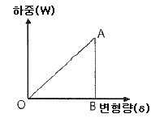
- 응력과 가로탄성계수
- 스프링 상수와 탄성 변형에너지
- 응력과 탄성 변형에너지
- 스프링 상수와 피로 한도량
(정답률: 65%)
37. 다음과 같은 리벳에 작용하는 강도 중 가장 중요하게 고려해야 할 강도는? (단, 판이 아닌 리벳만을 고려한다.)
- 압축강도
- 전단강도
- 비틀림강도
- 굽힘강도
(정답률: 64%)
38. 항복응력을 σY, 허용응력을 σa 라 할 때, 안전율(safety factor) Sf를 옳게 나타낸 것은?
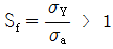
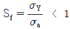
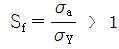
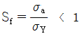
(정답률: 48%)
39. 축선에서의 약간의 어긋남을 허용하면서 충격과 진동을 감소시키는 축이음은?
- 유니버셜 조인트
- 플렉시블 커플링
- 클램프 커플링
- 올덤 커플링
(정답률: 62%)
40. 원주속도 5m/s로 2.2kW를 전달하는 벨트 전동장치에서 긴장측 장력은 약 몇 N 인가? (단, 장력비(eμθ = 2 이다.)
- 450
- 660
- 750
- 880
(정답률: 40%)
3과목: 컴퓨터응용가공
41. 다음은 가공경로 계획에서 parametric 방식과 Cartesian 방식을 비교하여 설명한 것이다. Cartesian 방식에 대한 설명으로 적절한 것은?
- 규칙적인 사각형 곡면을 가공하는 경우에 적합하다.
- 수치적 계산이 더 복잡하다.
- 곡면이 삼각형 패치로 정의된 경우에는 부적합하다.
- 피삭체 형상에 따라 적합하지 못한 경우가 있다.
(정답률: 58%)
42. 날개 모서리(Winged edge) 데이터 구조에 대한 설명 중 틀린 것은?
- 임의의 모서리를 중심으로 하여, 각각의 모서리에 이웃하는 모서리들, 그 모서리를 공유하는 두 개의 면, 모서리의 양 끝 꼭지점을 저장하는 구조이다.
- 각각의 면의 경계를 이루는 모서리들은 따로 저장할 필요 없이 각각의 면에 속한 하나의 모서리만 알면 된다.
- 면을 이루고 있는 모서리의 개수가 유동적이어도 된다.
- 네 개의 날개 모서리를 구별 없이 저장해도 각 모서리의 주변정보를 탐색할 수 있다.
(정답률: 45%)
43. CAD/CAM 의 도입 효과와 가장 거리가 먼 것은?
- 도면 품질 향상
- 설계 생산성 향상 및 설계 변경 용이
- 제품 개발 기간 단축
- 회계, 고객관리 업무의 통합적 수행
(정답률: 85%)
44. 다음 중 일반적인 NC 데이터의 생성과정으로 옳은 것은?
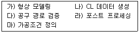
- 가 → 나 → 다 → 라 → 마
- 가 → 마 → 나 → 다 → 라
- 가 → 다 → 나 → 라 → 마
- 가 → 나 → 마 → 다 → 라
(정답률: 68%)
45. 솔리드 모델링에 관련된 설명으로 틀린 것은?
- CSG(Constructive Solid Geometry)는 프리미티브(primitive)들을 불리안 작업을 하여 원하는 형상을 모델링 한다.
- 솔리드를 구성하는 면(face), 모서리(edge), 꼭지점(vertex)들의 이웃관계 정보를 위상관계(topology)라 한다.
- B-Rep(Boundary Representation)으로 표현되면 현실세계에서 반드시 존재하는 모델이다.
- Half-edge 자료구조는 솔리드를 표현하는 데이터 구조의 일종이다.
(정답률: 59%)
46. 3차원 솔리드 모델링에서 일반적으로 사용되는 프리미티브(primitive)로 틀린 것은?
- 면(plane)
- 구(sphere)
- 원뿔(cone)
- 원기둥(cylinder)
(정답률: 78%)
47. B-spline 곡선에 대한 일반적인 설명으로 틀린 것은?
- B-spline 곡선은 국소변형 성질을 가지고 있다.
- 비균일 유리 B-spline 곡선을 NURBS곡선이라 한다.
- B-spline 곡선은 조정점의 개수에 무관하게 곡선의 차수를 결정할 수 있다.
- B-spline 곡선의 오더가 k라면 특정 매개 변수에 해당하는 곡선의 형상에 영향을 미치는 조정점은 (k+1)개이다.
(정답률: 62%)
48. CAM작업시 NC 가공 변수인 허용 가공 오차와 관련된 설정 항목으로 틀린 것은?
- 공구 진행속도(feed rate)
- 스텝 길이(step length)
- 커스프의 높이(cusp height)
- 계산 오차(calculation tolerance)
(정답률: 52%)
49. IGES 파일을 구성하는 6개의 섹션(Section)들 중, Directory Entry 섹션에서 기입한 각 요소를 정의하는 실제 데이터를 담고 있는 것은?
- Parameter 섹션
- Terminate 섹션
- Flag 섹션
- Global 섹션
(정답률: 71%)
50. 곡면 모델링(surface modeling)에 관한 설명으로 틀린 것은?
- 체적 등 물리적 성질의 계산이 간단하다.
- 면과 면의 교서을 구할 수 있다.
- NC 데이터를 얻을 수 있다.
- 은선 제거가 가능하다.
(정답률: 76%)
51. Bezier 곡선의 특징으로 틀린 것은?
- 첫 점과 끝 점으로 곡선의 시작과 끝 위치를 표시한다.
- 조정점들의 순서가 거꾸로 되어도 같은 곡선이 생성된다.
- 처음 두 점과 최종 두 점이 곡선의 시작점과 끝점에서의 기울기와 일치한다.
- 조정점(control point)들을 모두 지난다.
(정답률: 55%)
52. 모델링 기법 중에서 숨은선(hidden line) 표현을 할 수 없는 것은?
- Constructive Solid Geometry 모델링 방법
- Boundary Representation 모델링 방법
- Wireframe 모델링 방법
- Surface 모델링 방법
(정답률: 78%)
53. 형상 모델링에서 스윕(sweep) 곡면의 설명으로 옳은 것은?
- 많은 점 데이터로부터 생성되는 곡면
- 안내곡선을 따라 단면곡선이 일정규칙에 따라 이동되면서 생성되는 곡면
- 만들어진 곡면을 불러들여 기존 모델의 평면을 변경하여 생성되는 곡면
- 두 곡면이 만나는 부분을 부드럽게 하기 위하여 생성하는 곡면
(정답률: 77%)
54. CRT 모니터와 비교한 액정 디스플레이(LCD)의 일반적인 장점으로 틀린 것은?
- 시야각이 넓다.
- 얇고 가볍다.
- 완전한 평면이다.
- 깜박임(Fickering)이 없다.
(정답률: 69%)
55. 공작기계의 좌표계에 대한 일반적인 설명으로 틀린 것은?
- Z축의 방향은 통상 주축과 평행하다.
- 밀링, 드릴링 머신과 같이 공구가 회전하는 공작기계에서 Z축은 공구의 축과 평행하다.
- 선반과 같이 공작물이 회전하고 있는 공작기계에서 X축은 공작물의 회전축과 직각으로 공구가 움직이는 방향이다.
- Y축은 x, y, z 좌표계가 왼손 좌표계를 형성하도록 X와 Z축으로부터 정해진다.
(정답률: 66%)
56. 절삭속도와 공구수명의 관계식이 다음과 같이 주어지는 경우 n = 0.25 일 때 절삭속ㄷ를 2배로 높이면 공구 수명은 몇 배가 되는가? (단, V : 절삭속도(m/min), T : 공구수명(min), n, C : 상수)
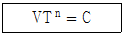
- 4
- 1/4
- 16
- 1/16
(정답률: 52%)
57. 일반적으로 CAD 시스템에서 사용하는 좌표계가 아닌 것은?
- 직교 좌표계
- 극 좌표계
- 원뿔 좌표계
- 구면 좌표계
(정답률: 66%)
58. 다음 그림에 나타난 피라미드 형상에서 면 ADE의 바깥 방향으로의 법선 벡터는? (단, i, j, k는 각각 x, y, z축의 양의 방향으로의 단위 벡터이다.)
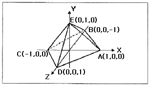
- i + j + k
- -i + j + k
- i = j + k
- i + j – k
(정답률: 46%)
59. 3차원 변환에서 점 P(x, y, z, 1)을 Z축을 기준으로 임의의 각도마큼 회전한 경우 변환행렬 T는? (단, 반시계 방향으로 회전한 각이 양(+)의 각이고, 변환된 점 P* = P · T 이다.)
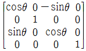
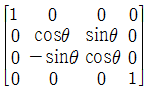
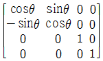
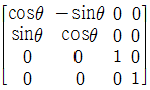
(정답률: 53%)
60. 액상의 광경화수지에 레이저를 조사하여 굳힌 후 적층하는 방식의 RP(Rapid Prototyping) 공정은?
- SLA(Stereo Lithography Apparatus)
- LOM(Laminated-Objent Manufacturing)
- SLS(Selective Laser Sintering)
- FDM(Fused-Deposition Modeling)
(정답률: 42%)
4과목: 기계제도 및 CNC공작법
61. 기계도면을 용도에 따른 분류와 내용에 따른 분류로 구분할 때, 용도에 따른 분류에 속하지 않는 것은?
- 부품도
- 제작도
- 견적도
- 계획도
(정답률: 55%)
62. 다음과 같은 기하공차에 대한 설명으로 틀린 것은?
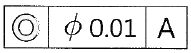
- 동심도의 허용공차가 0.01 이내이다.
- 데이텀 A에 대한 기하 공차를 나타낸다.
- 데이텀 A는 생략할 수 있다.
- 데이텀 A에 대한 중심의 편차가 최대 0.01 이내로 제한한다.
(정답률: 82%)
63. 다음 중 열간압연 연강판 및 강대에서 드로잉용에 해당하는 것은?
- SNCD
- SPCD
- SPHD
- SHPD
(정답률: 63%)
64. 다음 도면에서 치수 기입이 잘못된 것은?
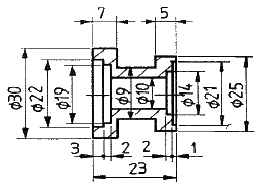
- 7
- ø9
- ø21
- ø30
(정답률: 88%)
65. 현의 길이를 올바르게 표시한 것은?
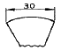
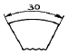
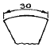
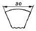
(정답률: 69%)
66. 그림과 같은 단면도를 표시된 물체의 부품은 모두 몇 개인가?
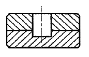
- 1개
- 2개
- 3개
- 4개
(정답률: 72%)
67. 그림과 같이 지시선의 화살표에 온 흔들림 공차를 적용하고자 할 때 옳게 나타낸 것은?
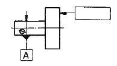
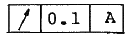
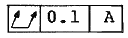
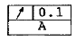
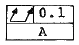
(정답률: 69%)
68. 다음 보기에 해당하는 선의 종류는?
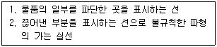
- 절단선
- 해칭선
- 파선
- 파단선
(정답률: 79%)
69. 다음 표면의 결 지시 기호에 대한 설명으로 틀린 것은?
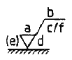
- b : 가공방법
- c : 파형의 높이
- d : 표면의 줄무늬 방향
- e : 샘플링 길이
(정답률: 53%)
70. 구멍의 치수가  이고, 축의 치수가
이고, 축의 치수가
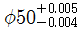
일 때, 최대 틈새는?- 0.004
- 0.0⑤
- 0.009
- 0.008
(정답률: 85%)
71. CNC선반가공에서 지령치 X = 80.0 으로 소재를 가공한 후 측정한 결과 X = 80.15 이었다. 기존의 X축 보정치를 0.0⑤라 하면 공구 보정 값을 얼마로 수정해야 하는가? (단, 직경지령을 사용한다.)
- 0.155
- 0.145
- -0.155
- -0.145
(정답률: 53%)
72. CNC프로그램의 어드레스(address)와 그 기능이 틀린 것은?
- 준비기능 - G
- 이송기능 - F
- 주축기능 - S
- 휴지기능 - T
(정답률: 86%)
73. 다음 나사 사이클에서 F 지령의 의미로 옳은 것은?
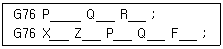
- 이송 속도
- 나사산의 각도
- 나사의 리드
- 최초 절입량
(정답률: 72%)
74. 머시닝센터에서 ø6mm 고속도 공구강 드릴로 알루미늄 소재를 드릴링 하고자 할 때, 드릴의 회전수는 약 몇 rpm 인가? (단, 절삭속도는 32 m/min 이다.)
- 1698
- 1598
- 1498
- 1398
(정답률: 63%)
75. X-Y 평면으로 설정된 상태에서 원호보간 지령시, X 방향의 속도와 Y 방향의 속도변화에 대한 설명으로 옳은 것은?
- X 방향의 속도가 항상 크다.
- Y 방향의 속도가 항상 크다.
- 어느 지점에서나 동일한 비율로 구성된다.
- 가공 지점에 따라 속도의 비율이 달라진다.
(정답률: 64%)
76. CNC 선반 작업에서 A점에서 B점으로 이동할 때 지령 방법으로 틀린 것은?
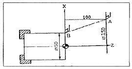
- G00 U-100.0 W-100.0;
- G00 U-50.0 Z0.0;
- G00 X50.0 W-100.0;
- G00 X50.0 Z0.0;
(정답률: 50%)
77. 다음은 머시닝센터의 고정 사이클 구멍가공 모드 지령 방법 중 P가 의미하는 것은?
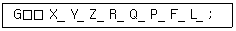
- 구멍바닥에서 휴지(dwell)시간
- 구멍가공에 소요되는 총 시간
- 고정 사이클의 가공 횟수
- 초기점에서부터 거리
(정답률: 79%)
78. CNC 방전가공 시 공작물의 예비가공에 의한 효과가 아닌 것은?
- 방전가공 시간을 단축시킨다.
- 가공 칩 배출을 용이하게 한다.
- 전극의 소모량을 줄일 수 있다.
- 가공 칩의 양이 증가하여 정밀도를 향상시킨다.
(정답률: 75%)
79. CNC공작기계의 제어방식이 아닌 것은?
- 하이브리드 제어방식
- 개방회로 제어방식
- 폐쇄회로 제어방식
- 반개방 제어방식
(정답률: 84%)
80. CNC프로그램에서 좌표치를 지령하는 방식이 아닌 것은?
- 절대지령 방식
- 기계원점지령 방식
- 증분지령 방식
- 혼합지령 방식
(정답률: 77%)